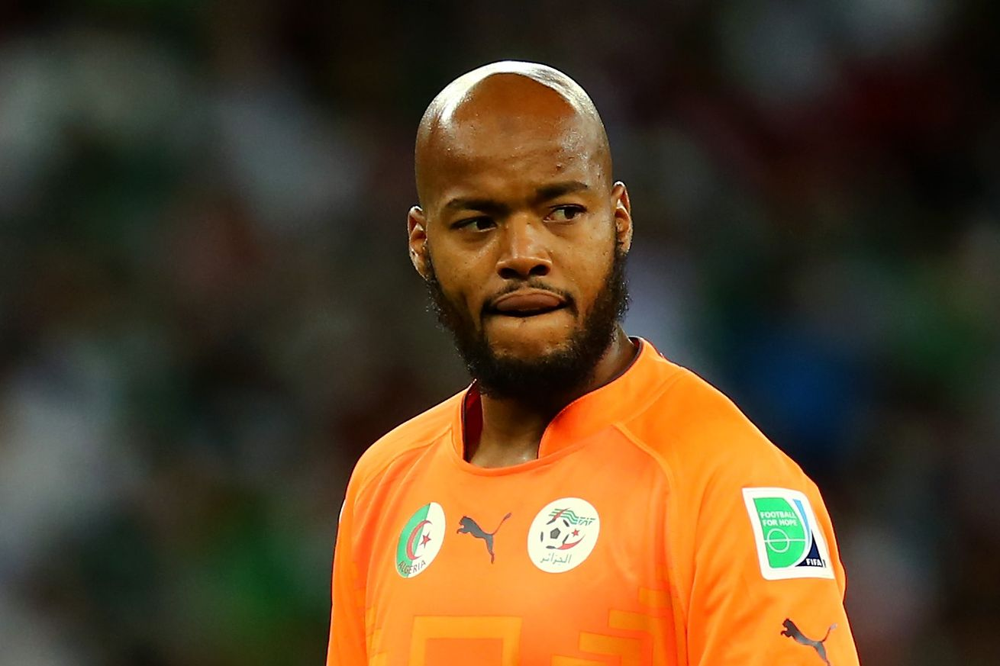

Bienvenue sur la page de Raïs M'Bolhi

Biographie
Raïs M'Bolhi, né le 25 avril 1986 à Paris, est un footballeur international algérien qui évolue comme gardien de but pour l'Ettifaq FC (Al Ettifaq Football Club).
Lors de la Coupe du monde 2010 en Afrique du Sud, il s'est distingué en étant sélectionné pour l'Algérien comme gardien de but nominal de l'équipe à l'époque. Sa performance lors de la Coupe du monde 2014 au Brésil a confirmé son statut de gardien numéro un. Il a été l'un des architectes des victoires des Fennecs à la Coupe d'Afrique des Nations 2019 et à la Coupe arabe de la FIFA 2021.
Carrière
RC Paris (1995-2002)
Olympique de Marseille (juin 2002 - janvier 2006)
Heart of Midlothian (Écosse, janvier 2006 - juin 2006)
Ethnikos Le Pirée (Grèce, juin 2006 - juin 2007)
Panetolikos FC (Grèce, juin 2007 - juin 2008)
FC Ryukyu (Japon, juin 2008 - mai 2009)
Slavia Sofia (Bulgarie, mai 2009 - décembre 2010)
Krylia Sovetov Samara (Russie, décembre 2010 - août 2013)
CSKA Sofia (Bulgarie, août 2013 - juillet 2014)
Philadelphia Union (États-Unis, juillet 2014 - août 2015)
Antalyaspor (Turquie, août 2015 - janvier 2017)
Stade rennais FC (janvier 2017 - novembre 2017)
Ettifaq FC (Arabie Saoudite, depuis janvier 2018)
Séléctions pour l'Algérie
Coupe du monde, Coupe d'Afrique des nations et Coupe arabe de la FIFA